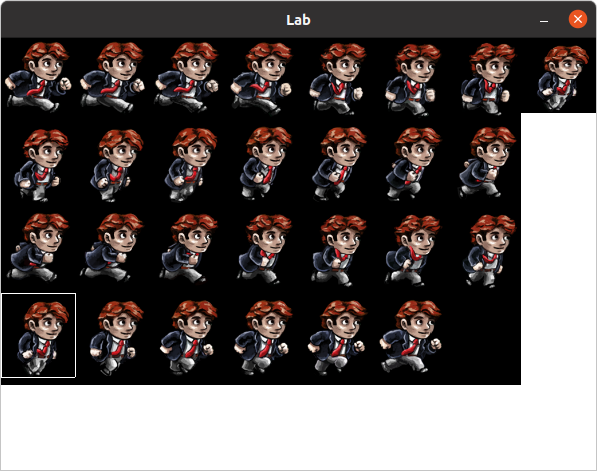
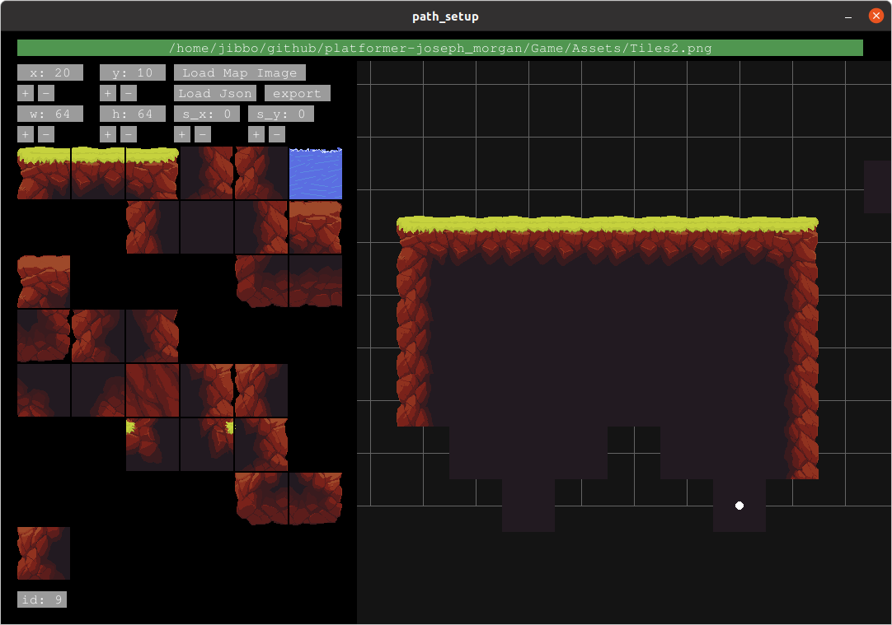
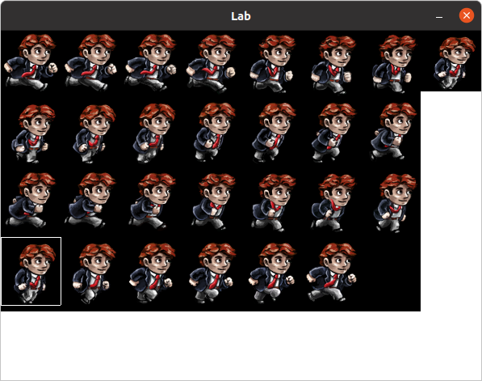
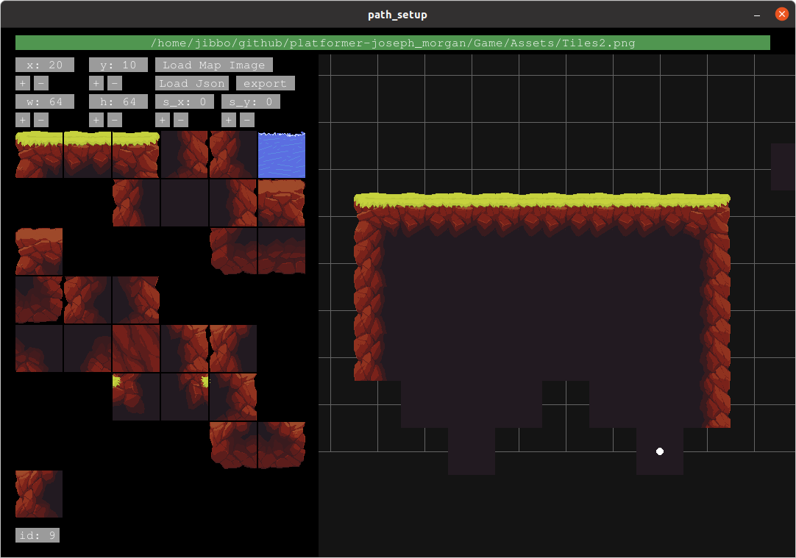

Combining two or three similar but very different codebases is a good exercise in compromise.
Meaning that often two, both focused, implementations have strengths in unreleated areas.
One codebase had more specific features and one was much more structurally solid.
In many ways these two stengths helped our team by filling in the gaps left by the other.
For instance we, with little modification, coppied the Audio and Font rendering systems clean out of one engine and inserted it into the other.
In fact the whole audio engine took less then 5 minutes in total to implement.
The whole project took around 40+ hours between the two of us as a rough, and likely under, estimation.
But, interestingly, many of the other systems required a good deal of
masaging, head-scratching, and sometimes, complete redesigns, in the process.
There was some issues with a component registration system;
Issues with a physics collision implementation;
Issues with a Texture data structure;
And major issues with a build system.
Although these instances were frustrating.
We did work through most of them, and some of them reinforced how complicated c++ is,
libraries included, and how important knowing your basics may be.
Despite the turmoil, project turned out well,
and both of us are excited to implement a plethora of new features and advancements.
We might choose a name eventually, probably not.